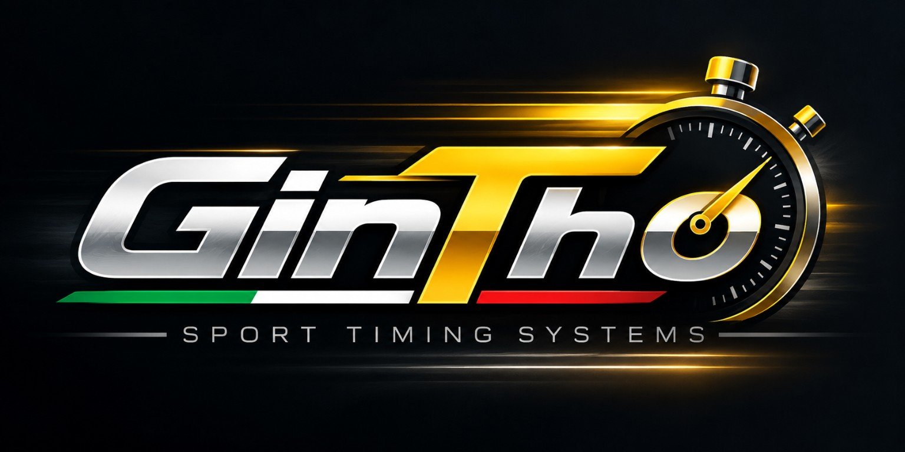
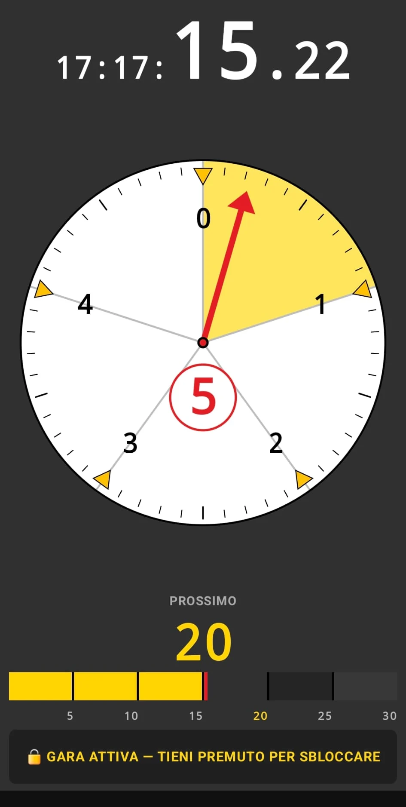
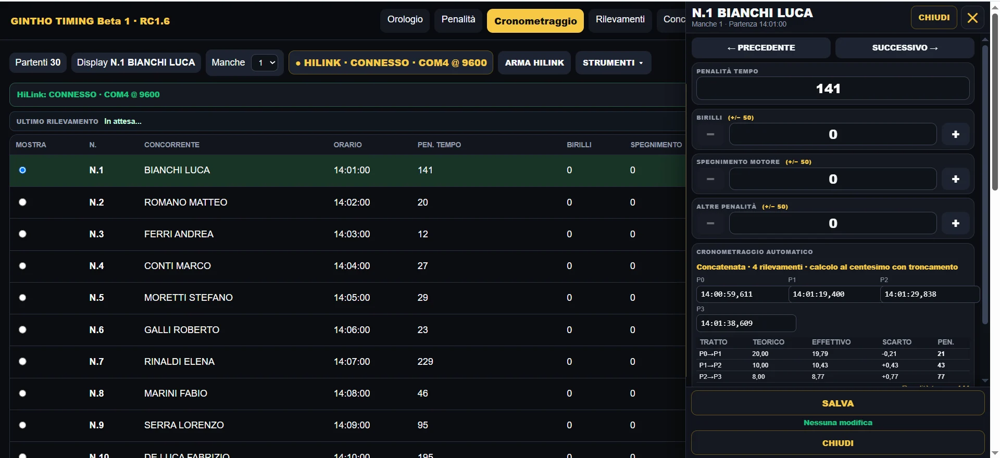

APP ANDROID
GinTho Crono
Il cronometraggio e la regolarità a portata di mano. Versione FREE e progetto SPORT per i soci.
Scopri l'app →
Strumenti GinTho per il cronometraggio, la regolarità e la gestione delle manifestazioni sportive. Dal tuo smartphone alla postazione di gara.


Soluzioni differenti per esigenze differenti: sul campo con Android e alla postazione organizzativa con Windows.
Il cronometraggio e la regolarità a portata di mano. Versione FREE e progetto SPORT per i soci.
Scopri l'app →Gestione gare, acquisizione rilevamenti, penalità e classifiche in un'unica postazione.
Esplora il software →Strumenti pensati per le esigenze dei tempi e della regolarità.
Informazioni leggibili e flussi progettati per l'utilizzo durante le manifestazioni.
Soluzioni dedicate a chi cronometra e a chi organizza.
Con GinTho Timing, elaborazione delle classifiche e stampe.
Uno sguardo autentico alle interfacce dei due prodotti.
Scopri download disponibili, versioni, manuali e istruzioni.
Un progetto futuro aperto a chi condivide la passione per sport, precisione e tecnologia: allenamenti, momenti formativi e iniziative da sviluppare insieme.
La passione per lo sport e la precisione che ispira i nostri strumenti. Uno spazio per le attività sportive e le future iniziative del marchio.
Scopri GinTho Sport →Scopri le caratteristiche dei programmi, consulta gli aggiornamenti e contattaci per valutare una prova di GinTho Timing.